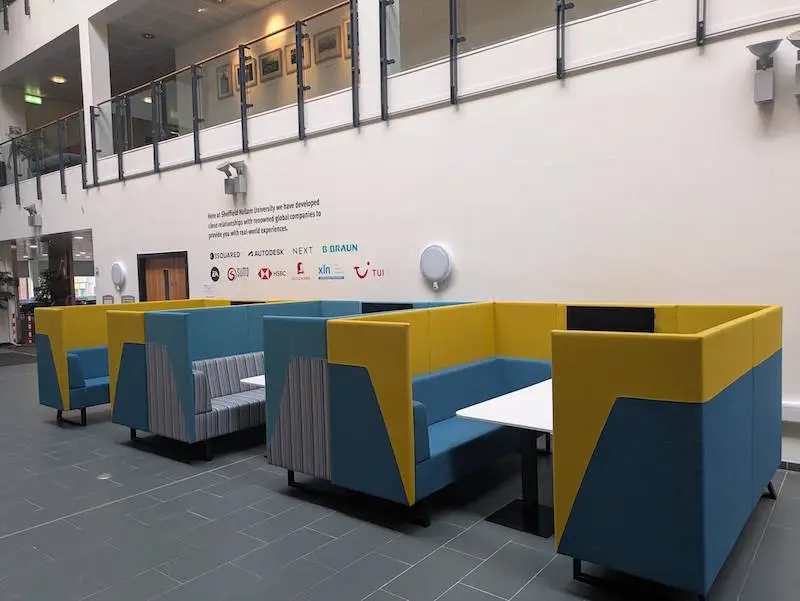
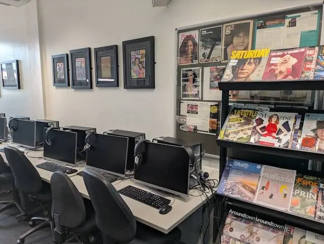

Who we are
Cantor College is a modern learning environment that supports students with practical skills, real-world projects, and industry-style teaching. We focus on helping learners build confidence, improve employability, and prepare for the future.
Our campus includes learning spaces, computing labs, support services, and study areas designed to help students succeed academically and personally.

Why choose Cantor College?
Modern Facilities
Updated learning spaces and labs that support practical work and project-based learning.
Student Support
Friendly academic and wellbeing support to help students stay on track.
Career Focus
We guide students toward placements, CV improvements, and career-ready skills.
Want to learn more?
If you have questions about admissions, courses, facilities, or student support, contact us and we’ll help you as soon as possible.
